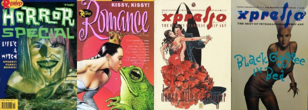
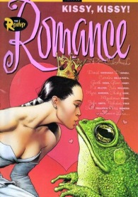
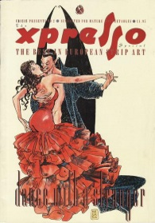

Revolver / Crisis Specials
[Issues 1-4]: 1990-1991
Revolver and (late era) Crisis spun off four specials under various guises, from around autumn 1990 to summer 1991. What they had in common was that they didn't contain any of the serialized strips from their parent magazines, instead focussing on self-contained one-offs.
- Autumn 1990: Revolver: The Horror Special (also listed as "Revolver Special 1" and "A 2000 AD Production")
- Winter 1991: The Revolver: Romance Special (also listed as "Crisis Presents 1")
- Spring 1991: The Xpresso Special (also listed as "Crisis Presents No. 2")
- Summer 1991: The Second Xpresso Special (also listed as "Crisis Presents No. 3")
While the two Revolver specials focus on home grown talent, the first Xpresso is tagged as "the best in European strip art", and takes the time to editorially bemoan a perceived lack of British culture in accepting (or paying for) the breadth of Europe's comic scene. (Well, you can't force these things.) The second Xpresso broadens its horizons with "the best of international strip art".

Revolver: The Horror Special
- Graveyard Shift - Waiting for Godot meets the undead, as two zombies chat about the afterlife whilst enjoying an evening stroll through their cemetery.
- The Wishing Hour - a "be careful what you wish for" and "don't make bargains with demons" morality tale about a youngster that wants to be a witch for Halloween.
- First Blood - a socially awkward young woman experiences her first period.
- A Dog And His Bastard - it's tempting to wonder if this was the template for the infamous Big Dave strip that started in 2000 AD in 1993. A sociopath uses his dog to cause mayhem in the suburbs.
- Martin - a man is either working for aliens or suffering from schizophrenia.
- The Numbers Game - a guest at a dinner party full of obnoxious guests uses the host's superstition as an excuse to wreak havoc.
- Summer's End - two witches don't take kindly to a rich businessman trying to force them from their land.
- The Head - a young man feels oppressed by the spirit held captive in an ancient mask, or is it just the will of his now deceased father?
- Mother's Day - a lonely, child-like man likes to treat his mother ... like Norman Bates! (It's Psycho meets Cradlegrave.)
- feeders & eaters - a truly disturbing Neil Gaiman joint in which an old woman finds someone who can provide her with sustenance.
- A Small Haunting - a confidence trickster becomes the ghost he purports to seek.
The Revolver: Romance Special
- Painted Lady - a man tries to move on from a failed relationship by starting afresh, in some ways.
- Cherish - a man reminisces about a nascent love affair and reflects on what could have been if it weren't for the winds of chance.
- Greenland - a selfish dandy tries to seduce a carefree young woman. (At least, I think that's what happening - it's fairly surreal. It says it continues in Crisis, but I'm not sure it actually does.)
- How To Spot A Lousy Lay: starring Beryl the Bitch - hopping over from a regular slot in Deadline, the not-backwards-about-coming-forwards Beryl regales us with how difficult it is to find a decent lay.
- Once Smitten - a lack of clear communication leads to an unfortunate infidelity that threatens to unhinge a new romance.
- still life - a loving couple are on a strained vacation where it's not clear why there's tension until the final page.
- The One I Love - standing out from the crowd because of amazing art by Glenn Fabry, this has a young man turn into a bit of a stalker before eventually being persuaded by his friends to ask the person he's been obsessing over (but never spoken to) out.
- My Little Ones - a man treats himself to an unorthodox Valentine's treat that upsets the downstairs neighbors.
- Love's Young Dream - a gay man that's had enough of the scene (here depicted as a library) makes a decision to seek out commitment.
- Unlikely Stories, Mostly: Imitating Art - a woman is taken to court and falsely accused of having based her life on a novel that was published when she was three. (Another one of these crops up in Crisis #60, matching the court room theme, and another two in the Xpresso Specials, below.)
The Xpresso Special
- Unlikely Stories, Mostly: Prime Cut - perhaps ahead of its time, this could be the plot for an episode of Black Mirror, featuring a media team who don't just look for spectacle, but involve themselves in questionable acts of sometimes violent stage dressing when they report from the field.
- Commercial - the movie Fellini's Casanova (or Il Casanova di Federico Fellini) is playing on television. The character of Giacomo Casanova takes umbrage at the movie being interupted by adverts and so metaphysically leaves the movie and enters the adverts to complain, which is where the trouble starts.
- Descending - Bonnie & Clyde, but double-speed and entirely set within an elevator.
- Christina - a young man waits for a train that will never come. An impatient hoodlum also waits. A morality play that suggests one shouldn't take others for granted.
- High Contagion - uhm ... you can't stop ideas from forming? An abstract man runs through an abstract city looking for an abstract Peter Gabriel.
- Marianne - difficult to fathom. A group of young males hang around in the park and hit on passing women. They meet Marianne, who apparently loves one of them in an alternate universe, but then that aspect gets dropped and she's sexually assaulted, but manages to get away.
- Canardo: Rhapsody in Grey - from Belgian artist Benoit Sokal, this has Inspector Canardo (an anthropomorphic duck) nursed back to health by a young ... anthropomorphic rabbit. She falls for him, he makes like a koala and eats, roots, shoots and leaves.
- Rice + Red Meat Stories: The disappearing act... - an obnoxious magician finally succeeds in disappearing ... forever!
The Second Xpresso Special
- Unlikely Stories, Mostly: Child Prodigy - a child bully in the park becomes the smaller fish, then the even smaller fish.
- Blurred Vision: The Creative Process - an alcoholic is frustrated that what was once important is now a lost memory.
- Menz Insana: Tales from the Mental Plane - two characters from an empty dimension of mental illness find their way back to reality. This must be a metaphor - perhaps for institutionalization, or the idea of being temporarily cured or medicated or in a symptomatic lull, or of schizophrenia?
- Mr Mamoulian: Huge Rodent & A Really Good Book - erm, two women are outwardly friendly towards a large, awkward-looking man, but then rude behind his back. Then, in the second part, one of the women is mostly nude and argues with the man. It's a Brian Bolland joint.
- Little Asshole - a child (declared an asshole at birth by a doctor) cross-dresses and is confronted by his mother.
- Sead - a man fishing in the desert lands a hot water bottle, but then its mum shows up.
- The Angriest Dog in the World - In these (eight) four-panel comics, a dog continually strains at his leash in the garden while his unseen owners have a humerous philosophical discussion inside the house.
- Outland - anthropomorphic protagonists get into japes in four half-page skits.
- Brutus Stiffus - this is a spoof of Asterix in which the Romans are nervous of the "gay gauls" (taking the place of Asterix & Obelix), because when they attack they rape them en masse. Not winning any woke prizes, here.
- Bring Me Your Love - a Robert Crumb joint - this is in the form of prose with three accompanying panels. It's about a man having a long-term affair.
- Oscar Zarate's One More Time, Please! - a pianist perfectionist replaces his singing partner with his dog, but the new creative partnership doesn't go smoothly.
- Missipipi River [sic] - in this wild west comedy of errors a man seeks revenge on his old partner.
- Brainworms - inspired by schlock horror creature movies such as Squirm and Bug, with a side-helping of parasitism (see The Hidden), this benefits from Bryan Talbot on art duties.
 |
 |
 |
Horror Special
by John Bolton |
Romance Special
by Brian Bolland |
Xpresso Special
by Milo Manara |